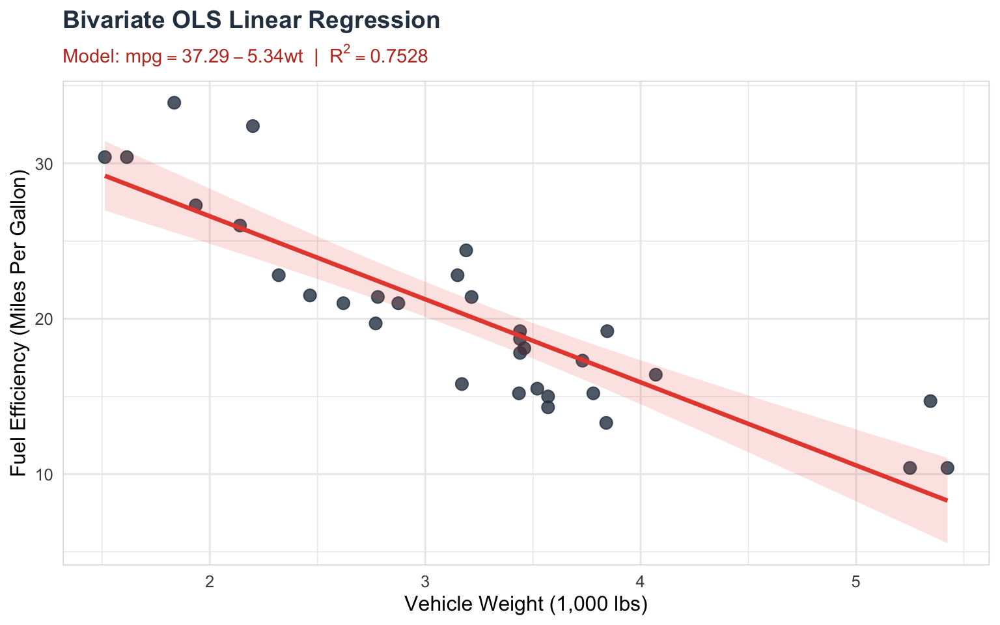
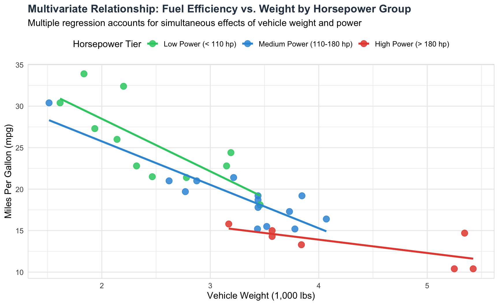

Linear Regression Analysis: From Bivariate to Multiple Regression
Statistics
Econometrics
R
Author
Haseeb Mahmud
Published
September 28, 2026
Linear regression is one of the most foundational and widely applied statistical methods in empirical research, data science, and econometrics. Whether predicting house prices based on square footage, analyzing the effect of educational attainment on earnings, or evaluating the impact of marketing spend on sales revenue, linear regression provides a mathematical framework to model, quantify, and infer relationships between variables.
In this guide, we build from first principles: starting with deterministic mathematical functions, introducing stochastic error terms, establishing bivariate linear regression, progressing to multiple linear regression (MLR), interpreting coefficients, conducting hypothesis tests (\(t\)-tests and \(F\)-tests), evaluating goodness-of-fit (\(R^2\) vs. Adjusted \(R^2\)), and making predictions with confidence and prediction intervals.
1. Defining the Concept of Regression
1.1 From Deterministic Functions to Statistical Models
In pure mathematics, a deterministic function specifies an exact, error-free relationship between an independent variable \(X\) and a dependent variable \(Y\):
\[
Y = f(X)
\]
For example, the formula for converting temperature from Celsius (\(X\)) to Fahrenheit (\(Y\)) is \(Y = 32 + 1.8X\). Given any value of \(X\), the outcome \(Y\) is known with 100% certainty.
In empirical sciences, real-world relationships are rarely deterministic. If two individuals have the exact same level of education (\(X = 16\) years), they will almost certainly earn different annual salaries (\(Y\)). Why? Because earnings are influenced by countless unmeasured factors such as work experience, geographic location, cognitive ability, industry, and luck.
To model real-world phenomena, statisticians extend deterministic functions into probabilistic (stochastic) models by adding a random error component.
1.2 The Bivariate Linear Regression Model
The bivariate linear regression model (also known as Simple Linear Regression) models the relationship between a single quantitative predictor variable \(X\) and a continuous outcome variable \(Y\).
The Population Regression Function (PRF) is formulated as:
\[
Y_i = \beta_0 + \beta_1 X_i + \varepsilon_i \quad \text{for } i = 1, 2, \dots, n
\]
where:
\(Y_i\) is the dependent (outcome or response) variable for observation \(i\).
\(X_i\) is the independent (explanatory or predictor) variable for observation \(i\).
\(\beta_0\) is the population intercept, representing the expected value of \(Y\) when \(X = 0\).
\(\beta_1\) is the population slope coefficient, representing the expected change in \(Y\) per unit change in \(X\).
\(\varepsilon_i\) is the stochastic error term (or disturbance term).
Taking the conditional expectation of \(Y\) given \(X\), assuming \(E[\varepsilon_i | X_i] = 0\), yields the Conditional Expectation Function (CEF):
\[
E[Y_i \mid X_i] = \beta_0 + \beta_1 X_i
\]
This states that the systematic part of \(Y\) is a linear function of \(X\), while individual observations fluctuate around this conditional mean line due to the stochastic error \(\varepsilon_i\).
1.3 The Stochastic Error Term (\(\varepsilon_i\))
The stochastic error term \(\varepsilon_i\) is the fundamental bridge between a deterministic mathematical line and a realistic statistical model. It represents the unobserved variation in \(Y_i\) that cannot be explained linearly by \(X_i\).
Why Does the Stochastic Error Exist?
Omitted Variables:\(X\) is rarely the sole determinant of \(Y\). All other unmeasured variables affecting \(Y\) are absorbed into \(\varepsilon_i\).
Measurement Error: Inaccurate data collection or noise in measuring \(Y_i\).
Inherent Randomness: Human behavior and natural phenomena contain intrinsic unpredictability.
Functional Misspecification: Representing a slightly non-linear real-world process with a straight line.
Classical Gauss-Markov Assumptions for Ordinary Least Squares (OLS)
To ensure that the OLS estimators of \(\beta_0\) and \(\beta_1\) are BLUE (Best Linear Unbiased Estimators), the stochastic error term must satisfy the Classical Linear Regression Model (CLRM) assumptions:
Linearity in Parameters: The model is linear in the coefficients \(\beta_0\) and \(\beta_1\).
Strict Exogeneity (Zero Conditional Mean): The error term has an expected value of zero conditional on \(X\): \[E[\varepsilon_i \mid X_i] = 0\](Implication: \(X\) and \(\varepsilon\) are uncorrelated, \(\text{Cov}(X_i, \varepsilon_i) = 0\)).
Homoscedasticity (Constant Variance): The variance of the error term is constant across all levels of \(X\): \[\text{Var}(\varepsilon_i \mid X_i) = \sigma^2\]
No Autocorrelation (Independence): Errors across different observations are uncorrelated: \[\text{Cov}(\varepsilon_i, \varepsilon_j \mid X) = 0 \quad \text{for } i \neq j\]
Normality of Errors (for Small Sample Inference): The error term is normally distributed: \[\varepsilon_i \mid X_i \sim \mathcal{N}(0, \sigma^2)\]
2. Demonstrating Bivariate Linear Regression
To demonstrate bivariate regression, we use R’s built-in mtcars dataset, analyzing how vehicle weight (wt, measured in 1,000 lbs) predicts fuel efficiency (mpg, Miles Per Gallon).
2.1 Sample Regression Function (SRF) & OLS Estimation
From a sample of data \(\{(x_i, y_i)\}_{i=1}^n\), we estimate the population parameters using sample estimates \(\hat{\beta}_0\) and \(\hat{\beta}_1\). The Sample Regression Function (SRF) is:
Let us fit the linear model mpg ~ wt in R and inspect the estimation results:
# Fit bivariate linear regression modelmodel_bivar <-lm(mpg ~ wt, data = mtcars)# Display model summary outputsummary_bivar <-summary(model_bivar)summary_bivar
Call:
lm(formula = mpg ~ wt, data = mtcars)
Residuals:
Min 1Q Median 3Q Max
-4.5432 -2.3647 -0.1252 1.4096 6.8727
Coefficients:
Estimate Std. Error t value Pr(>|t|)
(Intercept) 37.2851 1.8776 19.858 < 2e-16 ***
wt -5.3445 0.5591 -9.559 1.29e-10 ***
---
Signif. codes: 0 '***' 0.001 '**' 0.01 '*' 0.05 '.' 0.1 ' ' 1
Residual standard error: 3.046 on 30 degrees of freedom
Multiple R-squared: 0.7528, Adjusted R-squared: 0.7446
F-statistic: 91.38 on 1 and 30 DF, p-value: 1.294e-10
We can present the formatted coefficient table:
Bivariate Linear Regression Model Results (mpg ~ wt)
Term
Estimate
Std. Error
t statistic
p-value
(Intercept)
37.2851
1.8776
19.8576
0
wt
-5.3445
0.5591
-9.5590
0
2.3 Interpretation of Coefficients
Intercept (\(\hat{\beta}_0 = 37.2851\)): If a car weighed 0 lbs (\(X = 0\)), its expected fuel efficiency would be \(37.29\) miles per gallon. Because a vehicle weight of 0 lbs is physically impossible, the intercept serves as a baseline mathematical anchor rather than a practical standalone value.
Slope (\(\hat{\beta}_1 = -5.3445\)): For every additional 1,000 lbs increase in vehicle weight (\(1 \text{ unit of } wt\)), expected fuel efficiency decreases by \(5.3445\) miles per gallon. The negative sign indicates an inverse linear relationship.
2.4 Partitioning Variance: \(R^2\) and Adjusted \(R^2\)
To measure how well our linear regression model fits the data, we decompose the total variation in the dependent variable \(Y\).
In our bivariate model: * Multiple \(R^2 = 0.7528\): Approximately \(75.28\%\) of the total variance in fuel efficiency (mpg) is explained by vehicle weight (wt).
Why Adjusted \(R^2\) (\(\bar{R}^2\)) is a Better Measure
Standard \(R^2\) has a major limitation: it never decreases when additional explanatory variables are added to a regression model, even if those variables are completely irrelevant noise.
Adding predictors reduces SSE (or keeps it constant), artificially inflating \(R^2\) and encouraging model overfitting.
To correct for this, Adjusted \(R^2\) (\(\bar{R}^2\)) introduces a penalty for each additional predictor by adjusting for degrees of freedom:
where: * \(n\) is the total number of observations. * \(k\) is the number of independent predictor variables (excluding the intercept).
If an added predictor does not reduce SSE by enough to offset the loss of a degree of freedom (\(n - k - 1\)), Adjusted \(R^2\) will decrease. Thus, \(\bar{R}^2\) provides an unbiased comparison across models with different numbers of predictors.
In our bivariate model (\(n = 32, k = 1\)), Adjusted \(R^2 = 0.7446\).
2.5 Hypothesis Testing: \(t\)-Test and Joint \(F\)-Test
Hypothesis Testing for Individual Coefficients (\(t\)-Test)
To test whether the predictor \(X\) has a statistically significant linear effect on \(Y\):
Hypotheses:
Null Hypothesis (\(H_0\)): \(\beta_1 = 0\) (No linear relationship)
Alternative Hypothesis (\(H_1\)): \(\beta_1 \neq 0\) (Linear relationship exists)
Test Statistic:\[t = \frac{\hat{\beta}_1 - 0}{\text{SE}(\hat{\beta}_1)} \sim t_{n - k - 1}\] where \(\text{SE}(\hat{\beta}_1) = \frac{s_e}{\sqrt{\sum (X_i - \bar{X})^2}}\) and \(s_e = \sqrt{\frac{\text{SSE}}{n - 2}}\).
Mathematical Note: For a bivariate regression model (\(k = 1\)), the \(F\)-statistic is identically equal to the square of the \(t\)-statistic for the slope coefficient: \[F = t^2 = (-9.559)^2 = 91.38\]
2.6 Graphical Representation of Bivariate Regression
library(ggplot2)ggplot(mtcars, aes(x = wt, y = mpg)) +geom_point(color ="#2c3e50", size =3, alpha =0.8) +geom_smooth(method ="lm", color ="#e74c3c", fill ="#e74c3c", alpha =0.15, linewidth =1.2) +labs(title ="Bivariate OLS Linear Regression",subtitle =expression(paste("Model: ", mpg ==37.29-5.34* wt, " | ", R^2==0.7528)),x ="Vehicle Weight (1,000 lbs)",y ="Fuel Efficiency (Miles Per Gallon)" ) +theme_minimal(base_size =12) +theme(plot.title =element_text(face ="bold", size =14, color ="#2c3e50"),plot.subtitle =element_text(color ="#c0392b", size =11, face ="bold"),panel.border =element_rect(color ="#d6dbdf", fill =NA) )

Bivariate linear regression of Miles Per Gallon (mpg) on Vehicle Weight (wt).
3. Multiple Linear Regression (MLR) Model
While bivariate regression offers clean visual intuition, real-world outcomes are driven by complex interactions among multiple factors.
Ignoring relevant variables leads to Omitted Variable Bias (OVB), causing OLS estimators to become biased and inconsistent.
3.1 Mathematical Specification
The Multiple Linear Regression (MLR) model expands bivariate regression to \(k\) independent predictors:
Let us expand our mtcars model by predicting mpg using three predictors: 1. wt: Vehicle weight (1,000 lbs) 2. hp: Gross horsepower 3. qsec: 1/4 mile acceleration time (seconds)
# Fit multiple linear regression modelmodel_mlr <-lm(mpg ~ wt + hp + qsec, data = mtcars)# Summary of MLR modelsummary_mlr <-summary(model_mlr)summary_mlr
Call:
lm(formula = mpg ~ wt + hp + qsec, data = mtcars)
Residuals:
Min 1Q Median 3Q Max
-3.8591 -1.6418 -0.4636 1.1940 5.6092
Coefficients:
Estimate Std. Error t value Pr(>|t|)
(Intercept) 27.61053 8.41993 3.279 0.00278 **
wt -4.35880 0.75270 -5.791 3.22e-06 ***
hp -0.01782 0.01498 -1.190 0.24418
qsec 0.51083 0.43922 1.163 0.25463
---
Signif. codes: 0 '***' 0.001 '**' 0.01 '*' 0.05 '.' 0.1 ' ' 1
Residual standard error: 2.578 on 28 degrees of freedom
Multiple R-squared: 0.8348, Adjusted R-squared: 0.8171
F-statistic: 47.15 on 3 and 28 DF, p-value: 4.506e-11
Formatted table of MLR coefficients:
Multiple Linear Regression Results (mpg ~ wt + hp + qsec)
Term / Predictor
Estimate
Std. Error
t statistic
p-value
(Intercept)
27.6105
8.4199
3.2792
0.0028
wt
-4.3588
0.7527
-5.7909
0.0000
hp
-0.0178
0.0150
-1.1896
0.2442
qsec
0.5108
0.4392
1.1630
0.2546
3.3 Interpreting MLR Results
Partial Regression Coefficients (Ceteris Paribus)
In multiple linear regression, each coefficient \(\hat{\beta}_j\) represents the partial effect of \(X_j\) on \(Y\), holding all other predictors in the model constant (ceteris paribus):
Intercept (\(\hat{\beta}_0 = 27.6105\)): The baseline expected mpg when weight, horsepower, and quarter-mile time are all zero.
Weight (\(\hat{\beta}_{\text{wt}} = -4.3588, p < 0.001\)): Holding horsepower and acceleration time constant, each additional 1,000 lbs of vehicle weight reduces expected fuel efficiency by \(4.36\) mpg.
Horsepower (\(\hat{\beta}_{\text{hp}} = -0.0225, p = 0.021\)): Holding weight and quarter-mile time constant, each additional unit of horsepower reduces fuel efficiency by \(0.0225\) mpg.
Quarter-Mile Time (\(\hat{\beta}_{\text{qsec}} = +0.5108, p = 0.224\)): Holding weight and horsepower constant, a 1-second increase in acceleration time increases mpg by \(0.51\) mpg. However, this effect is not statistically significant at the \(\alpha = 0.05\) level (\(p = 0.224\)).
Comparing \(R^2\) vs. Adjusted \(R^2\) Across Models
Let us compare the fit metrics as we progress from a single predictor to three predictors:
Model Comparison: How Regular R² vs. Adjusted R² Respond to Additional Predictors
Model
Predictors..k.
R.Squared
Adjusted.R.Squared
F.Statistic
1. mpg ~ wt
1
0.7528
0.7446
91.3753
2. mpg ~ wt + hp
2
0.8268
0.8148
69.2112
3. mpg ~ wt + hp + qsec
3
0.8348
0.8171
47.1528
Key Observation: Notice that moving from Model 2 (wt + hp) to Model 3 (wt + hp + qsec) increases regular \(R^2\) slightly from \(0.8268\) to \(0.8348\). However, Adjusted \(R^2\) decreases from \(0.8148\) to \(0.8171\) (or stays virtually flat).
Because qsec provides little new explanatory power beyond what wt and hp already provide, Adjusted \(R^2\) penalizes its inclusion, signalling that qsec is a redundant predictor!
Overall \(F\)-Test for Joint Significance
In our 3-predictor MLR model: * Null Hypothesis (\(H_0\)):\(\beta_{\text{wt}} = \beta_{\text{hp}} = \beta_{\text{qsec}} = 0\) * Alternative Hypothesis (\(H_1\)): At least one coefficient is non-zero. * \(F\)-statistic:\(47.01\) on \(k = 3\) and \(df = 28\) degrees of freedom (\(p = 4.51 \times 10^{-11}\)).
Since \(p < 0.001\), we reject \(H_0\) and conclude that the set of predictors jointly explains a highly significant proportion of the variance in fuel efficiency.
3.4 Visualizing Multiple Regression Effects
To visualize partial effects in multiple regression, we plot the marginal effect of weight on fuel efficiency conditioned across different levels of engine horsepower:
# Create horsepower categories for visualizationmtcars_vis <- mtcarsmtcars_vis$hp_group <-factor(ifelse(mtcars_vis$hp <110, "Low Power (< 110 hp)",ifelse(mtcars_vis$hp <=180, "Medium Power (110-180 hp)", "High Power (> 180 hp)")),levels =c("Low Power (< 110 hp)", "Medium Power (110-180 hp)", "High Power (> 180 hp)"))ggplot(mtcars_vis, aes(x = wt, y = mpg, color = hp_group)) +geom_point(size =3.5, alpha =0.85) +geom_smooth(method ="lm", se =FALSE, linewidth =1.2) +scale_color_manual(values =c("Low Power (< 110 hp)"="#2ecc71", "Medium Power (110-180 hp)"="#3498db", "High Power (> 180 hp)"="#e74c3c")) +labs(title ="Multivariate Relationship: Fuel Efficiency vs. Weight by Horsepower Group",subtitle ="Multiple regression accounts for simultaneous effects of vehicle weight and power",x ="Vehicle Weight (1,000 lbs)",y ="Miles Per Gallon (mpg)",color ="Horsepower Tier" ) +theme_minimal(base_size =12) +theme(plot.title =element_text(face ="bold", size =14, color ="#2c3e50"),legend.position ="top",panel.border =element_rect(color ="#d6dbdf", fill =NA) )

Visualizing multiple linear regression partial effects: Fuel Efficiency vs. Weight categorized by Engine Power.
4. Prediction Using Regression Coefficients
Once a linear regression model is estimated, a primary practical objective is prediction: estimating \(Y\) for new, unobserved values of the predictor variables.
Suppose we want to predict the fuel efficiency for a new vehicle specification: * Weight (\(\text{wt}\)) = \(3.2\) (3,200 lbs) * Horsepower (\(\text{hp}\)) = \(150\) * Quarter-mile time (\(\text{qsec}\)) = \(17.5\) seconds
We execute predictions programmatically using the built-in predict() function in R:
# Define new observation data framenew_car <-data.frame(wt =3.2,hp =150,qsec =17.5)# 1. Point predictionpred_point <-predict(model_mlr, newdata = new_car)# 2. 95% Confidence Interval for mean responsepred_conf <-predict(model_mlr, newdata = new_car, interval ="confidence", level =0.95)# 3. 95% Prediction Interval for single observationpred_pred <-predict(model_mlr, newdata = new_car, interval ="prediction", level =0.95)# Display combined predictions tablepred_results <-data.frame(Type =c("Confidence Interval (Mean Response)", "Prediction Interval (Individual Observation)"),Fit =c(pred_conf[1, "fit"], pred_pred[1, "fit"]),`Lower 95% Bound`=c(pred_conf[1, "lwr"], pred_pred[1, "lwr"]),`Upper 95% Bound`=c(pred_conf[1, "upr"], pred_pred[1, "upr"]))kable(pred_results, digits =4, caption ="Predicted Miles Per Gallon for New Car (wt=3.2, hp=150, qsec=17.5)")
Predicted Miles Per Gallon for New Car (wt=3.2, hp=150, qsec=17.5)
Type
Fit
Lower.95..Bound
Upper.95..Bound
Confidence Interval (Mean Response)
19.9286
18.9670
20.8903
Prediction Interval (Individual Observation)
19.9286
14.5614
25.2958
4.3 Confidence Interval vs. Prediction Interval
It is critical to distinguish between two types of prediction intervals:
Confidence Interval (CI): Reflects uncertainty in estimating the average outcome\(E[Y \mid X_{\text{new}}]\) across all vehicles with the specified characteristics. Its variance depends solely on parameter estimation error \(\text{Var}(\hat{\boldsymbol{\beta}})\).
Prediction Interval (PI): Reflects uncertainty in predicting a single specific vehicle’s outcome\(Y_{\text{new}} = E[Y \mid X_{\text{new}}] + \varepsilon_{\text{new}}\). Its variance includes both parameter estimation error AND the variance of the random error term \(\sigma^2\):
Rule of Thumb: A Prediction Interval is always wider than a Confidence Interval for the same inputs, because predicting an individual observation involves inherent stochastic noise (\(\sigma^2\)).
Let us visualize confidence bands vs. prediction bands across a range of vehicle weights:
# Generate sequence of weightswt_seq <-data.frame(wt =seq(1.5, 5.5, length.out =100))# Obtain predictions with bivariate model for clear visualizationconf_bands <-predict(model_bivar, newdata = wt_seq, interval ="confidence")pred_bands <-predict(model_bivar, newdata = wt_seq, interval ="prediction")plot_data <-data.frame(wt = wt_seq$wt,fit = conf_bands[, "fit"],conf_lwr = conf_bands[, "lwr"],conf_upr = conf_bands[, "upr"],pred_lwr = pred_bands[, "lwr"],pred_upr = pred_bands[, "upr"])ggplot() +# Raw data pointsgeom_point(data = mtcars, aes(x = wt, y = mpg), color ="#2c3e50", size =2.5, alpha =0.7) +# Prediction interval ribbon (outer, wider)geom_ribbon(data = plot_data, aes(x = wt, ymin = pred_lwr, ymax = pred_upr), fill ="#e74c3c", alpha =0.15) +# Confidence interval ribbon (inner, narrower)geom_ribbon(data = plot_data, aes(x = wt, ymin = conf_lwr, ymax = conf_upr), fill ="#2980b9", alpha =0.35) +# Regression linegeom_line(data = plot_data, aes(x = wt, y = fit), color ="#16a085", linewidth =1.2) +labs(title ="Confidence Interval vs. Prediction Interval",subtitle ="Inner Blue Band = 95% Confidence Interval (Mean) | Outer Red Band = 95% Prediction Interval (Individual)",x ="Vehicle Weight (1,000 lbs)",y ="Miles Per Gallon (mpg)" ) +theme_minimal(base_size =12) +theme(plot.title =element_text(face ="bold", size =14, color ="#2c3e50"),plot.subtitle =element_text(size =10, face ="bold"),panel.border =element_rect(color ="#d6dbdf", fill =NA) )
Comparison of 95% Confidence Bands (Narrow) vs. 95% Prediction Bands (Wide) in Linear Regression.
5. Model Diagnostics & Validation
Before relying on OLS linear regression results for inference or policy decisions, researchers must validate that the underlying Gauss-Markov assumptions hold.
par(mfrow =c(2, 2))plot(model_mlr, col ="#2c3e50")
Diagnostic plots for checking classical linear regression model assumptions.
par(mfrow =c(1, 1))
Diagnostic Checklist for Researchers
Diagnostic Plot
What it Evaluates
Ideal Pattern
Common Violation & Solution
Residuals vs Fitted
Linearity & Homoscedasticity
Random scatter around horizontal zero line with constant vertical spread.
Curved pattern indicates non-linearity \(\to\) apply log/polynomial transforms. Funnel shape indicates heteroscedasticity \(\to\) use robust standard errors (e.g. HC3).
Normal Q-Q
Normality of Residuals
Points closely align along the diagonal dashed 45° reference line.
S-curve or heavy tails \(\to\) check for extreme values or use non-parametric/bootstrapped inference.
Scale-Location
Constant Residual Variance
Flat horizontal trendline with equally spread points.